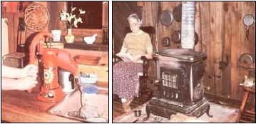

My wife and I began our protest against the high cost of energy in a very small way: We turned off the pilot lights on the gas range. And we saw results-meager but satisfying?when our next utility bill arrived. That small savings convinced us that we could cut back on our power usage without sacrificing comfort, so we decided to level our guns at our disturbingly high consumption of electricity.
Our first scheme involved running a waterline from the well to an old-fashioned pitcher pump that we installed on the countertop beside the sink (and the novelty of pumping our water by hand hasn't worn off yet!). Once again, we noticed a satisfactory decrease in the amount of energy used by our household. The electric water pump, which had previously run almost constantly, was now usually quiet ... for the most part starting up only when the toilet was flushed. So, with a background of success to spur us on, we decided to rethink our relationship with the old commode!
And we soon realized that the flush toilet actually provided a double-barreled opportunity for savings, because each use not only triggered the pump's electric motor, but also sent five gallons of precious water down the tube. Fortunately, we already had a fine outhouse (foolishly abandoned), and
it was simple to remove the shovels, rakes, and other paraphernalia stored there and put the little building to better use. The pump still ran occasionally, but our electric bill took yet another dip. However, in spite of this victory, the thin metal disk on the electric meter resembled a whirling dervish at times, so we agreed that further economies were in order.
We turned to our recreational electricity gobbler?the television-with some misgivings. Like many families, we tended to turn on the "box" each evening and stare bleary-eyed at a succession of programs . . . "entertainment" which was too often obscene, mediocre, or both! We began our efforts by being more selective in our viewing, and?being firm and honest with ourselves?found that very few of the offerings were worth the power to pipe them in.
This realization brought about the resurrection of two old and beautiful customs that we had long neglected: reading and conversing. Our family life grew richer ... our horizons were broadened by the magic of books ... and we found that we had much to talk about besides the high cost of living. And, while we were enjoying such marvelous discoveries, our electric bill plunged still further.
About this time, we also resolved to remove the elecric water heater and replace it' with a more economical gas model. We didn't realize just how successful this maneuver was until the next monthly bill arrived, which included a form letter pointing out the severe penalties for tampering with the power company's meters and equipment! We accepted this as a tribute to our tenacity and overall diligence, and that night celebrated our feat with a romantic meal ... by candlelight.
It was clear that our bill had hit rock bottom when, the following month, a huge orange truck from the electric company pulled into our drive. With tears of laughter, we watched the repairman saunter up to the house with a new meter tucked underneath his arm!
At that point it occurred to us (I suppose the devil made us do it!) that it would be great fun if the new meter read even lower than the one that had just been removed. So, with happy hearts, we planned one final move against our lone remaining energy gobbler ... the 15-cubic-foot freezer that was kept in the cellar.
Upon considering the matter, we realized (with horror) that we'd allowed the machine to run year round regardless of whether it was full or all but empty. Luckily, the solution was easy: By mid-April, when all of the prior season's garden produce had been consumed, we pulled the plug and cleaned the unit. And there it sat ... harmless, until the next harvest. Again, we felt the pride that comes with slowing down the meter.
Later, when I phoned in our most recent reading, a disgruntled voice on the other end of the line mumbled something about our using less power than some people who burned nothing but light bulbs. (His attitude miffed me somewhat, too, since it was the electric company's own public relations program that had started us thinking about conservation in the first place!) At any rate, we were pleased with the results of our confrontation with the galloping electrons. Nevertheless, there was still our overuse of natural gas to contend with.
The largest gas consumer was our circulating heater, so we simply moved the beast to the rarely heated workshop attached to the house. In its place, we installed a picturesque woodburning stove, which added nostalgic charm to the room. What's more, with its chromed top removed, the heater's flat, cast-iron surface provided us with an ideal place to cook. After a little practice, we found we could make a mean pot of "stovetop" coffee ... and could even prepare a reasonable roast, a delicious stew, and a variety of other tasty dishes on the woodburner!
Through it all, of course, our "regular" range remained idle, and whenever we felt like cutting our gas usage still more, we'd heat our bathwater on top of the woodstove. (The increased humidity that resulted was delightful, and we ran the gas flame under the water heater less and less.)
So, in a simple step-by-step manner, we reduced the staggering cost of running our homestead. And the process has provided us with additional benefits we'd never dreamed of. For example, the sound of wood splitting beneath the ax on a frosty morning is very soul-satisfying, as is the comforting sight of the ever-growing pile of free fuel stacked up against a cold winter.
I find, too, that the added exercise makes me feel healthier than I have in years. After a session of woodchopping, I return, pinkcheeked and rejuvenated, to the house and sit before the fire. There, on occasion, we sip a glass of wine and savor some rye bread and cheese, realizing-more than ever?that happiness is not having what one wants, but, rather, wanting what one has! We're finally learning the simple joys of living ... and discovering that there are few things more enjoyable than an open fire, a book, and a companion to share them with.
|
PHOTOS BY THE AUTHOR LEFT. An old-fashioned pitcher pump attached to the kitchen sink not only cuts energy costs ... it adds charm to the room and is fun to operate, too. RIGHT. Once you break the TV habit, you'll see that there's real pleasure to be found in reading a book by the fire and having a companion to share that ""quiet time"". |
 |
|